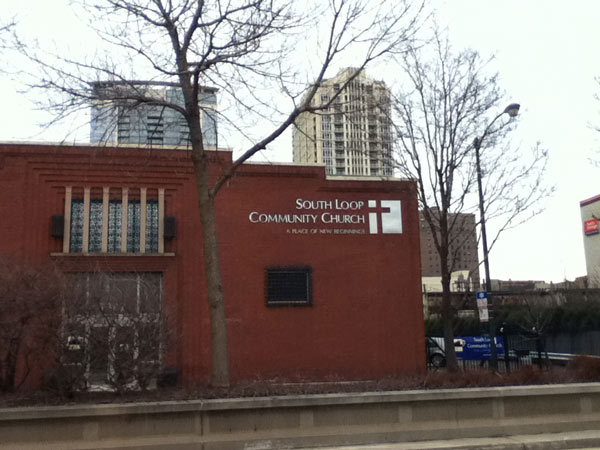
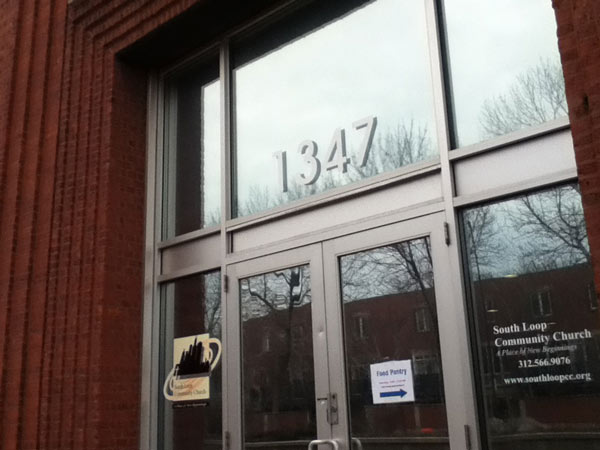
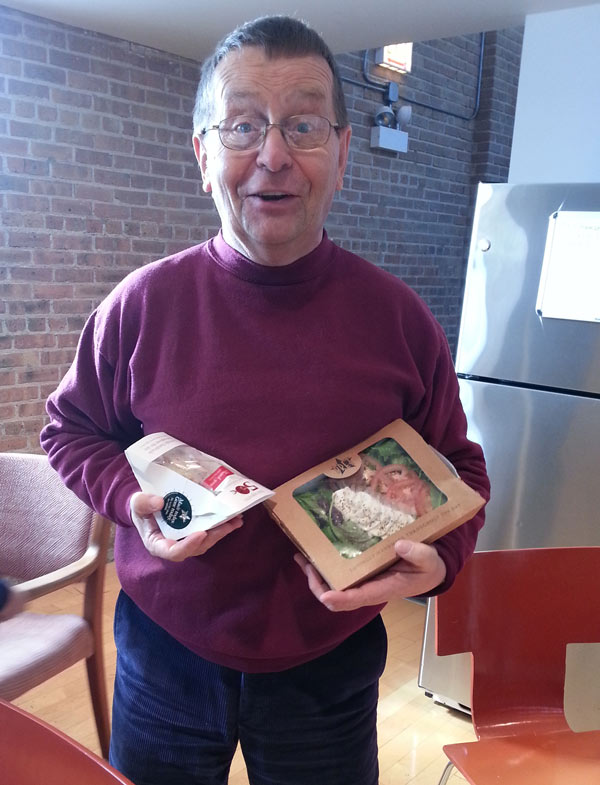
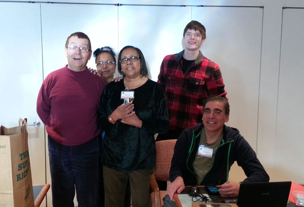
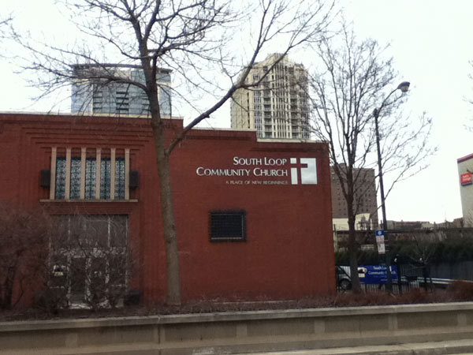
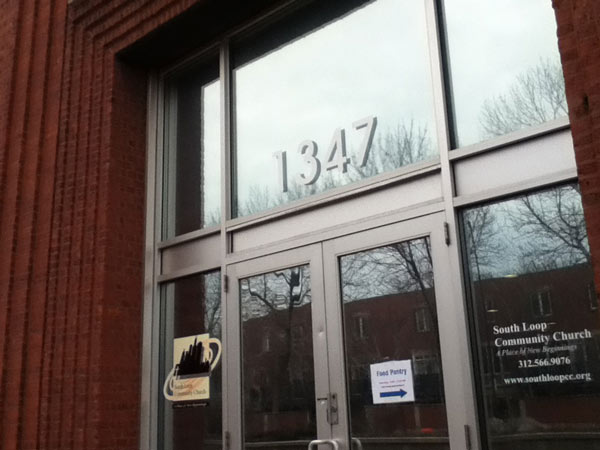
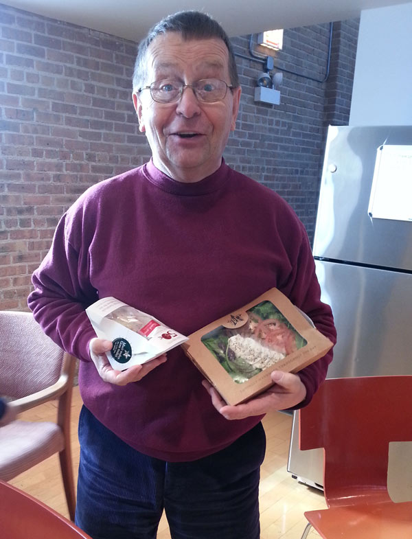
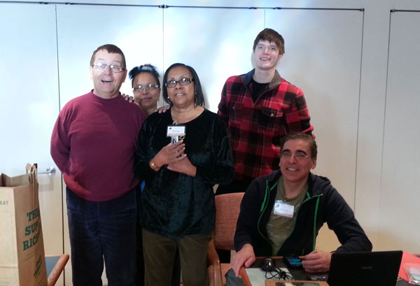

What Are They About?
Basic Information
This is a food pantry. This agency is used to distribute food for their section of Chicago. They serve people in need of something to eat everyday, elderly, low income people and those who posses a link card. This is a church, so not only does it distribute food for those who need it, they also provided non-editable items, and perform church ceremonies.
Volunteer Information
Volunteers are welcomed, with no experience required. As long as you call in ahead of time, and schedule an appointment. (They're very welcoming. :D)
History of SLCC
The church opened its doors to the public on October of 2000. It's a non-denominational minsitry where they intergrated all sorts of people from different backgrounds and aim to spread the gospel of Jesus Christ via word and deeds, incarnationally and missionally. They are a big believer in positively impacting the neighborhood through Christian community developments such as Relocation, reconciliation, redictribution, Leadership development, listening to the community, anything church based, Wholistic Discipleship and Empowerment.
Location of SLCC
View Larger Map
Gallery
 







This gallery does not contain all the members of the food pantries.
Official Contact Information
www.southloopcc.org
1347 S State Street
Chicago, IL 60605
Phone: 312.566.9076
Fax: 312.566.9077
Mobile Cellular: 312.485.9076
Email: southloopcc@ameritech.net